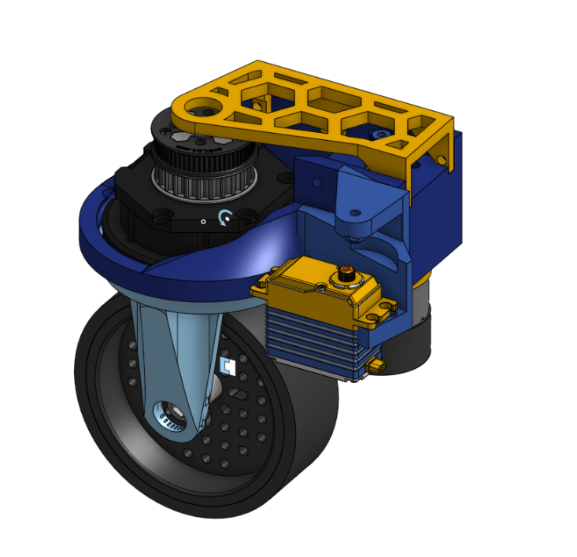

Activities
Coaxial Swerve Drive
Our team has spent the summer of 2024 designing, constructing, and programming a coaxial swerve drive! This complex drive train provides a strategic advantage over the omnipresent mecanum wheel drive trains used throughout FTC due to their speed and high accuracy maneuverability. This is largely thanks to our lead designer William Halls. Stay tuned for a post to our YouTube channel with more info soon!


Huskylens Tutorial
Check out our tutotial for use of the Huskylens sensor for the Centerstage game